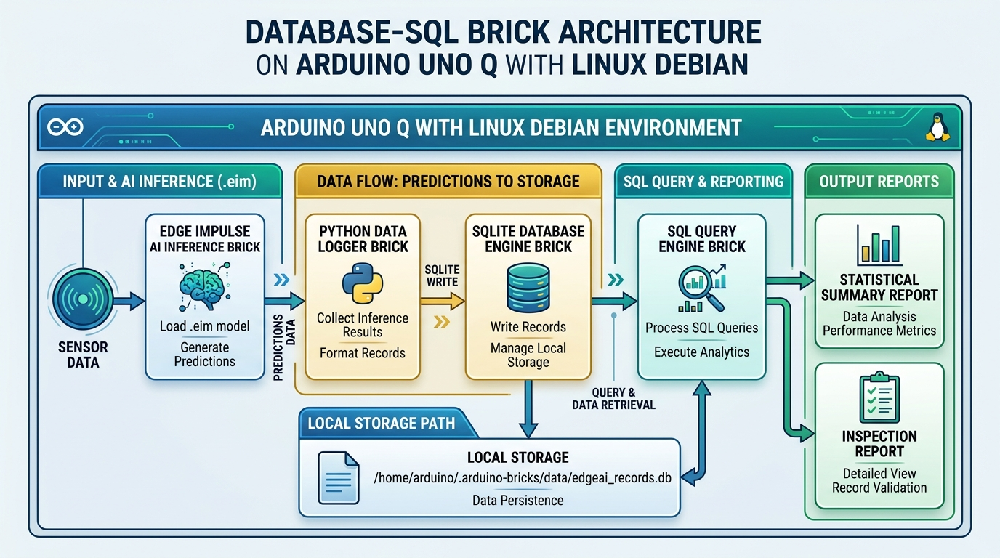

สาระสำคัญและผลการเรียนรู้ประจำบท
กรอบมาตรฐานการเรียนรู้ตามหลักสูตรแกนกลางการศึกษาขั้นพื้นฐาน และสมรรถนะสำคัญของผู้เรียน
ในระบบปัญญาประดิษฐ์บนอุปกรณ์ปลายทางระดับวิศวกรรม การประมวลผลโมเดล AI เพียงอย่างเดียวไม่เพียงพอต่อการนำไปใช้งานจริง จำเป็นต้องมีกลไกจัดเก็บประวัติเหตุการณ์การทำนาย (Inference Event Logging) เพื่อให้ระบบสามารถตรวจสอบย้อนหลัง (Audit Trail & Traceability) ได้อย่างแม่นยำ Database-SQL Brick บนบอร์ดพัฒนา Arduino UNO Q ทำหน้าที่ผสานพลังของระบบจัดการฐานข้อมูลเชิงสัมพันธ์ SQLite บนหน่วยประมวลผล 64 บิต Qualcomm QRB2210 ทำให้อุปกรณ์สามารถบันทึกผลการคัดแยกชิ้นงาน พิกัดของวัตถุ หรือคำสั่งเสียงลงในไฟล์ฐานข้อมูลภายในเครื่องได้อย่างรวดเร็วและปลอดภัยภายใต้สถาปัตยกรรม Offline-First โดยไม่ต้องพึ่งพาระบบคลาวด์หรือการเชื่อมต่ออินเทอร์เน็ตภายนอกตลอดเวลา
ผลการเรียนรู้ที่คาดหวังตามกรอบสมรรถนะ (Learning Outcomes)
ผู้เรียนสามารถอธิบายหลักการทำงานของ Database-SQL Brick, สถาปัตยกรรมฐานข้อมูลแบบ Serverless (SQLite), และความจำเป็นของการบันทึกประวัติการตรวจจับ AI บนอุปกรณ์ปลายทางได้อย่างถูกต้องตามหลักวิชาการ
ผู้เรียนสามารถออกแบบโครงสร้างตารางข้อมูลเชิงสัมพันธ์ (SQL Tables) และเขียนคำสั่ง CREATE TABLE เพื่อจัดเก็บพารามิเตอร์ของโมเดล AI (เช่น Anomaly Scores, Bounding Boxes, และ Voice Keywords) ได้อย่างถูกต้อง
ผู้เรียนสามารถเขียนชุดคำสั่งภาษาไพทอนเพื่อแทรกบันทึกข้อมูล (INSERT) และสืบค้นรายงานสรุปผลเชิงสถิติ (SELECT ... GROUP BY) เพื่อแสดงอัตราส่วนของดี/ของเสียได้อย่างมีประสิทธิภาพ
ผู้เรียนตระหนักถึงความสำคัญของความถูกต้องและครบถ้วนของข้อมูล (Data Integrity) มีความรอบคอบในการจัดสรรพื้นที่จัดเก็บบนอุปกรณ์ และมีความรับผิดชอบต่อการจัดการข้อมูลตามหลักจริยธรรมข้อมูล
สถาปัตยกรรมระบบฐานข้อมูลบนอุปกรณ์ปลายทาง (Edge Database Architecture)
ในระบบอัตโนมัติภาคอุตสาหกรรม (Industry 4.0) การส่งข้อมูลผลการวิเคราะห์ของ AI กลับไปบันทึกบนคลาวด์ทุกวินาทีไม่สามารถทำได้เสมอไป เนื่องจากข้อจำกัดด้านความหน่วงของเครือข่าย (Network Latency), ปัญหาความไม่เสถียรของสัญญาณอินเทอร์เน็ต และต้นทุนค่าบริการคลาวด์ที่สูง ดังนั้น การมี ระบบฐานข้อมูลท้องถิ่นในตัวอุปกรณ์ (Embedded On-Device Database) จึงเป็นหัวใจสำคัญของการออกแบบระบบ Edge AI
SQLite เป็นระบบจัดการฐานข้อมูลเชิงสัมพันธ์แบบฝังตัว (Embedded Relational Database Management System) ที่ได้รับความนิยมสูงสุดในระดับสากล เนื่องจากมีคุณลักษณะเฉพาะที่โดดเด่น:
- ไร้เซิร์ฟเวอร์ (Serverless Architecture): ไม่จำเป็นต้องเปิดรัน Background Service หรือดาต้าเบสเซิร์ฟเวอร์แยกต่างหาก โดยไบนารีและเอนจินของฐานข้อมูลจะรวมเป็นส่วนหนึ่งของกระบวนการทำงานในโปรแกรมภาษาไพทอนโดยตรง
- ไฟล์เดี่ยวจัดเก็บสมบูรณ์ (Single File Storage): ฐานข้อมูล ตาราง ดัชนี และข้อมูลทั้งหมดจะถูกบันทึกเป็นไฟล์ไบนารีเดี่ยว เช่น
edgeai_records.dbทำให้การสำรองข้อมูล (Backup) หรือการโอนย้ายไฟล์ทำได้อย่างสะดวกง่ายดาย - มาตรฐานความถูกต้องปลอดภัย (ACID Compliant): รองรับคุณสมบัติ Atomicity, Consistency, Isolation, และ Durability ทำให้มั่นใจได้ว่าข้อมูลจะไม่เสียหาย แม้จะเกิดเหตุการณ์ไฟดับกะทันหันในโรงงาน

ข้อกำหนดการกำหนดค่าไฟล์ app.yaml สำหรับ Database-SQL Brick
# การกำหนดค่าระบบ Database-SQL Brick บน Arduino App Lab name: database-sql-logger version: 1.0.0 description: ระบบจัดการฐานข้อมูล SQL สำหรับบันทึกประวัติการตรวจจับ AI บน Arduino UNO Q variables: { DB_FILE_PATH: "/home/arduino/.arduino-bricks/data/edgeai_records.db", TABLE_NAME: "anomaly_logs", LOG_RETENTION_DAYS: "30" }
การออกแบบโครงสร้างตารางข้อมูลเพื่อรองรับโมเดล AI (Database Schema Design)
เพื่อให้ระบบ Edge AI สามารถจัดเก็บผลลัพธ์ของโมเดลปัญญาประดิษฐ์ประเภทต่าง ๆ ในหลักสูตรได้อย่างครอบคลุม โครงสร้างฐานข้อมูลจึงได้รับการออกแบบแยกเป็น 3 ตารางหลักตามประเภทของภารกิจ AI:
anomaly_logs (Visual Anomaly Detection)
งานตรวจสอบคุณภาพชิ้นงาน
ใช้บันทึกผลการตรวจสอบพื้นผิวชิ้นงานผิดปกติจากโมเดล Visual Anomaly Detection (บทที่ 5 และ 7)
| ชื่อฟิลด์ (Field) | ชนิดข้อมูล (Type) | ข้อกำหนด (Constraint) | คำอธิบาย |
|---|---|---|---|
| id | INTEGER | PRIMARY KEY AUTOINCREMENT | รหัสลำดับรายการแบบอัตโนมัติ |
| timestamp | DATETIME | DEFAULT CURRENT_TIMESTAMP | วันเวลาที่ทำการตรวจจับ |
| model_name | TEXT | NOT NULL | ชื่อไฟล์โมเดลที่ใช้ตรวจจับ เช่น vad_model.eim |
| anomaly_mean_score | REAL | - | ค่าคะแนนความผิดปกติเฉลี่ยของภาพ |
| anomaly_max_score | REAL | NOT NULL | ค่าคะแนนความผิดปกติสูงสุดในภาพ |
| status | TEXT | NOT NULL | สถานะผลการตัดสิน: 'NORMAL' หรือ 'DEFECT' |
| alert_triggered | INTEGER | DEFAULT 0 | สถานะสั่งเตือนภัย: 0 (ปกติ), 1 (ส่งเสียง/ไฟเตือน) |
object_detection_logs (FOMO Object Detection)
งานตรวจจับพิกัดวัตถุ
ใช้บันทึกพิกัดตำแหน่ง (X, Y) และค่าความมั่นใจ (Confidence) ของวัตถุที่โมเดล FOMO ตรวจพบ (บทที่ 8 และ 9)
| ชื่อฟิลด์ | ชนิดข้อมูล | ข้อกำหนด | คำอธิบาย |
|---|---|---|---|
| id | INTEGER | PRIMARY KEY AUTOINCREMENT | รหัสลำดับการตรวจจับ |
| label | TEXT | NOT NULL | ป้ายกำกับวัตถุ เช่น 'screw', 'bottle', 'pcb' |
| confidence | REAL | NOT NULL | ความน่าจะเป็นของโมเดล (0.00 – 1.00) |
| pos_x, pos_y | INTEGER | NOT NULL | พิกัดจุดกึ่งกลางวัตถุบนระนาบภาพพิกเซล |
การเขียนชุดคำสั่งบันทึกและสืบค้นข้อมูลด้วยภาษาไพทอน (Python SQL Integration)

โค้ดตัวอย่างฉบับสมบูรณ์: db_logger.py
SQLite3 + Python
import os import sqlite3 # ดึงตำแหน่งไฟล์ฐานข้อมูลจากตัวแปรสภาพแวดล้อมที่ระบุใน app.yaml DB_PATH = os.environ.get("DB_FILE_PATH", "edgeai_records.db") def init_database(): """สร้างไดเรกทอรีและตารางฐานข้อมูลหากยังไม่มีในระบบ""" os.makedirs(os.path.dirname(os.path.abspath(DB_PATH)), exist_ok=True) conn = sqlite3.connect(DB_PATH) cursor = conn.cursor() # 1. ตารางบันทึกประวัติการตรวจจับความผิดปกติ (Visual Anomaly) cursor.execute(''' CREATE TABLE IF NOT EXISTS anomaly_logs ( id INTEGER PRIMARY KEY AUTOINCREMENT, timestamp DATETIME DEFAULT CURRENT_TIMESTAMP, model_name TEXT NOT NULL, anomaly_mean_score REAL, anomaly_max_score REAL NOT NULL, status TEXT NOT NULL, alert_triggered INTEGER DEFAULT 0 ) ''') conn.commit() conn.close() print(f"[Database-SQL Brick] เริ่มต้นโครงสร้างฐานข้อมูลสำเร็จ: {DB_PATH}") def log_anomaly_event(model_name, mean_score, max_score, threshold=15.0): """ฟังก์ชันบันทึกผลการทำนายของโมเดล AI ลงฐานข้อมูล""" status = "DEFECT" if max_score >= threshold else "NORMAL" alert = 1 if status == "DEFECT" else 0 conn = sqlite3.connect(DB_PATH) cursor = conn.cursor() # ใช้พารามิเตอร์ (?) เพื่อป้องกัน SQL Injection และความผิดพลาดของชนิดข้อมูล cursor.execute(''' INSERT INTO anomaly_logs (model_name, anomaly_mean_score, anomaly_max_score, status, alert_triggered) VALUES (?, ?, ?, ?, ?) ''', (model_name, mean_score, max_score, status, alert)) conn.commit() conn.close() print(f"[SQL Insert] บันทึกผล: {status} (Max Score: {max_score:.2f}, Alert: {alert})")
ในการเขียนคำสั่ง SQL ผ่านภาษาไพทอน ห้ามใช้การต่อสตริงโดยตรง เช่น f"INSERT INTO ... VALUES ('{status}')" เพราะอาจเกิดข้อผิดพลาดจากอักขระพิเศษ (เช่น เครื่องหมายคำพูดเดี่ยว) และเสี่ยงต่อช่องโหว่ความปลอดภัย ต้องใช้เครื่องหมายคำถามปรนัย ? เป็น Placeholder เสมอ
การสืบค้นและวิเคราะห์สถิติสรุปผล (SQL Analytics & Daily Summary Report)
จุดเด่นสำคัญของการใช้ฐานข้อมูลเชิงสัมพันธ์บนระบบสมองกลฝังตัว คือความสามารถในการ รวบรวมและวิเคราะห์ข้อมูลเชิงสถิติ (Aggregate Functions) ได้ทันทีบนตัวบอร์ด โดยไม่ต้องส่งข้อมูลดิบทั้งหมดไปยังเซิร์ฟเวอร์ภายนอก:
SELECT status, COUNT(*) AS total_count, ROUND(AVG(anomaly_max_score), 2) AS avg_max_score FROM anomaly_logs WHERE DATE(timestamp) = DATE('now') GROUP BY status;
การประเมินสมรรถนะการปฏิบัติการ (Performance Assessment Checklist)
รายการเกณฑ์การตรวจสอบสมรรถนะที่ผู้เรียนต้องผ่านการประเมินผลในบทเรียนที่ 3
คำถามทบทวนองค์ความรู้ท้ายบทเรียน (Academic Review Questions)
แบบฝึกหัดสำหรับประเมินตนเองและทบทวนเนื้อหาสำคัญเพื่อเตรียมความพร้อมสู่การปฏิบัติการขั้นสูง
คลิกเพื่อดูแนวคำตอบ
คลิกเพื่อดูแนวคำตอบ
GROUP BY status ร่วมกับฟังก์ชัน COUNT(*) มีหลักการทำงานอย่างไร และนำมาประยุกต์ใช้ในงานอุตสาหกรรมอย่างไร?
คลิกเพื่อดูแนวคำตอบ
GROUP BY status จะจัดกลุ่มแถวข้อมูลที่มีค่าในคอลัมน์ status เหมือนกันเข้าด้วยกัน (เช่น กลุ่ม 'NORMAL' และกลุ่ม 'DEFECT') จากนั้นฟังก์ชัน COUNT(*) จะนับจำนวนรายการทั้งหมดในแต่ละกลุ่ม ในงานอุตสาหกรรม คำสั่งนี้ช่วยให้เราคำนวณ อัตราส่วนของเสีย (Defect Rate Percentage) และสรุปรายงานผลการผลิตประจำวันได้ทันทีด้วยการรันคำสั่งเพียงบรรทัดเดียว
แบบทดสอบท้ายบทเรียนที่ 3 (ปรนัย 10 ข้อ)
ทดสอบความรู้ความเข้าใจตามเกณฑ์มาตรฐานตัวชี้วัดสาระเทคโนโลยี พร้อมเฉลยและบันทึกคะแนนอัตโนมัติ
บทเรียนที่ 4: การจัดเตรียมชุดข้อมูลและการออกแบบขั้นตอนการประมวลผล (Data Pipeline) บน Edge Impulse
ศึกษาการเชื่อมโยงระบบบันทึกภาพ การสกัดคุณลักษณะเด่น และการตั้งค่า Data Pipeline